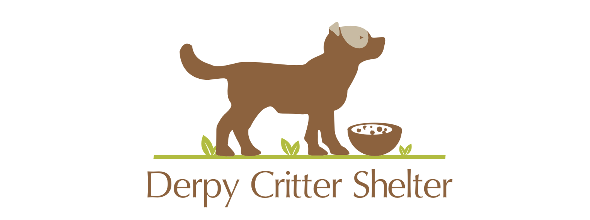

|

| |
Welcome to Derpy Critters: Finding Forever Homes for Furry FriendsAt Derpy Critters, we believe that every cat and dog deserves a loving home. Established with a passion for animal welfare, we are a non-profit organization committed to rescuing, rehabilitating, and rehoming cats and dogs in need. Our mission is simple: to match adorable, affectionate, and sometimes quirky pets with compassionate individuals and families, creating lifelong bonds of companionship. With a team of dedicated volunteers and animal lovers, we strive to provide a safe haven for abandoned, neglected, or surrendered pets. Our focus is not just on finding homes for these derpy critters, but also on ensuring that they receive the care, love, and attention they deserve while they are with us. Why choose Derpy Critters?
Contact us today to begin your journey towards adoption with Derpy Critters! | |
| Privacy/Disclosure Statement | |